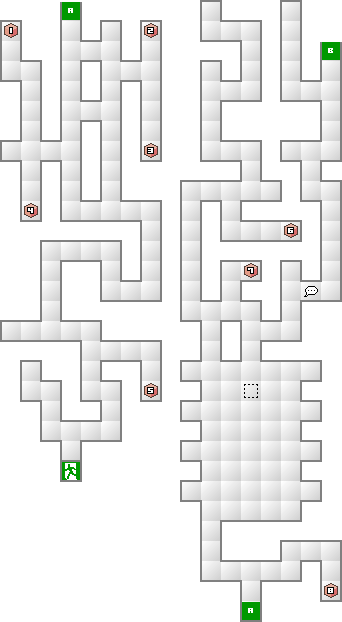
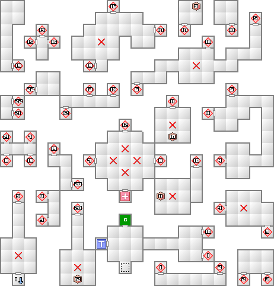
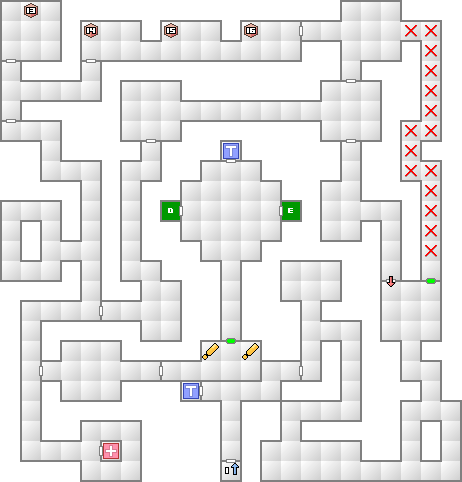
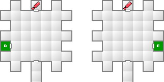

ラストダンジョンとなる。さすがに出現する敵も強力な悪魔ばかりなので、慎重に進んでいきたい。ここぞという場面で反射されてピンチになどならないように。
地下遺跡3以降、つまり下り坂の先から地上に戻りたい場合は、坂を下りたところの部屋に地上への出口があるので覚えておこう。
小部屋とワープが連続したフロアになっている。正しい道順は、分岐している場合に次の方角の部屋に入ればよい。
まずは南、次に北。ここで広間に出る。南がヒールスポットなので回復しておこう。次は広間の西。抜けた先で南東に進むと将門の兜が入手できる。正解の道は南西となる。
ナオミのビジョンクエストでアプスー（物理）を倒しているなら魔王ロキを、ティアマト（魔法）を倒しているなら龍王ヤマタノオロチを仲魔にしたい。
なぜかというと、両者とも無銘の刀を利用して合体剣にすることで強力な剣になるからだ。ヤマタノオロチは特殊法則に則ってクサナギの剣となる。攻撃力90の剣だ。
魔王ロキは七星氷刃村正となるが、ゲーム中最高の威力を誇る氷刃村正になるので、そのまま剣にしてもいいし、御霊で強化すればさらに強力な剣になるだろう。どちらもラスボス戦では非常に役に立つので、是非作成しておきたい。
もしレベルが65を超えてしまっているなら、ヤマタノオロチの代わりに魔王スルトでもよい。こちらの場合は魔晶変化させることで攻撃力120のレーヴァテインとなる。
このダンジョンで将門の兜と将門の具足が手に入るが、クリア後のダンジョンで入手できる残りの装備と合わせることで全パラメーターアップの恩恵を受けることができるようになる。入手しておこう。
妖精オベロンのみが所持する物理特技だが、酒を最高段階まで使用しているなら、おそらく最強の全体物理特技となる。オベロンがそのまま使っただけではあまり威力を発揮できないので、造魔に覚えさせるのが一番良い。興味があるなら使ってみよう。最後まで使えるボス用物理特技のひとつである。
マニトゥが魔法タイプなら物理が有効なので、魔神オシリスを連れて行きたい。新月時に強化されるだけでなく、攻撃回数が増加する闇討ちが魅力的だ。材料の中の破壊神セイテンタイセイはペットショップで交換できるものを利用する。
魔神オシリス同様、ペットショップのセイテンタイセイを利用する。魔神ルーグも同様に交換したやつを使う。これで狂神アラミサキにタル・カジャを継承することができる。アラミサキはオシリスと違って銃撃を無効化するのでラスボスの攻撃で状態異常になることが無いというのが利点がある。当然こちらも闇討ちがメインである。
ちなみに、セイテンタイセイやルーグを入手する場合は、ここで出現する邪鬼グレンデルで交換することができる。非常にお手軽だ。
すぐ手に入る材料だけで両カーン所持の妖獣フェンリルとなる。フェンリルは速さが20あるので、御霊で強化すれば40まで届く。基本的にカーンしかすることがないが、それでよいなら十分な性能。物理マニトゥが相手なら是非連れて行きたい。
| 能力 | LV74 HP10595 MP1196 力19 知17 魔23 耐20 速16 運10 |
|---|---|
| 特技 | マハ・ジオンガ テトラカーン 異形胞子飛弾 極光大破斬 |
| からたけ割り（物理タイプ） アギラオ（魔法タイプ） |
| 火炎 | 氷結 | 電撃 | 衝撃 | 破魔 | 呪殺 | 万能 |
|---|---|---|---|---|---|---|
| 精神 | 神経 | 魔力 | 打撃 | 斬撃 | 技 | 銃撃 |
| 100 | 100 | 100 | 100 | 無効 | 無効 | 100 |
| 無効 | 無効 | 無効 | 100 | 100 | 100 | 100 |
極光大破斬が一番の驚異となるだろう。前列に万能相性の攻撃が3回。ラク・カジャ、タル・ンダを使用していないとほぼ即死になるぐらいの威力を誇る。これに耐えられるまで防御を固めるのがまず第一だ。
異形胞子飛弾はダメージと同時に状態異常にかかってしまう。銃撃相性なのでテトラカーンで反射可能。状態異常にかかってしまったら、行動不可能なものから優先的に直していこう。
| 能力 | LV82 HP24096 MP1192 力30 知16 魔20 耐28 速15 運14 |
|---|---|
| 特技 | メガトンプレス セカンド・サン 異形胞子飛弾 ナラクノアビス |
| 火炎 | 氷結 | 電撃 | 衝撃 | 破魔 | 呪殺 | 万能 |
|---|---|---|---|---|---|---|
| 精神 | 神経 | 魔力 | 打撃 | 斬撃 | 技 | 銃撃 |
| 150 | 150 | 150 | 150 | 無効 | 無効 | 100 |
| 無効 | 無効 | 無効 | 50 | 50 | 50 | 50 |
ナオミのビジョンクエストで分かれ道右のアプスーを倒すとこの形態になる。
物理一辺倒なので対策さえできれば非常に楽な相手となる。ぶっちゃけて言えば、主人公に物理無効のスカジャランダを装備させ、女神パラスアテナ、妖魔ヴァルキリー、鬼女ランダ、邪気ギリメカラを配置すれば、あとはなにもせずとも自滅してくれる。
また、魔法に弱いのを利用して七星氷刃村正や電光村正を利用すれば、通常よりも高い確率で動きを止めることができる。主人公の知力次第では、ほとんど行動させずに倒すことも可能になる。
セカンド・サンは、隊列1、3、5番目のキャラに打撃相性のダメージを与える。
ナラクノアビスは属性がLAWの仲魔を強制的にCOMPに戻してしまう。魔神や女神を出している場合は注意が必要。
| 能力 | LV83 HP22647 MP7267 力16 知24 魔30 耐23 速18 運13 |
|---|---|
| 特技 | メギドラオン デ・カジャ デ・クンダ ハルマゲドン |
| 悪魔の産声 ネクロ・ドグマ 異形胞子飛弾 |
| 火炎 | 氷結 | 電撃 | 衝撃 | 破魔 | 呪殺 | 万能 |
|---|---|---|---|---|---|---|
| 精神 | 神経 | 魔力 | 打撃 | 斬撃 | 技 | 銃撃 |
| 50 | 50 | 50 | 50 | 反100 | 反100 | 100 |
| 反100 | 反100 | 反100 | 100 | 100 | 100 | 100 |
ナオミのビジョンクエストで分かれ道左のティアマトを倒すとこの形態になる。
物理タイプよりも圧倒的な強さを誇る。万全の体制で挑むこと。
温度系魔法と衝撃は半分しか通らないので、万能か物理で攻めることになるが、あちらも攻撃手段は打撃・銃撃・万能なので、魔法に弱い仲魔で編成してもいいだろう。また、打撃と銃撃の頻度もあまり高くないので、カーン持ち悪魔はちょっと暇になるかも知れない。
物理が有効なので、月齢を新月に調整した状態での魔神オシリスか狂神アラミサキの闇討ちが、現段階では最も有効な攻撃手段になるだろう。両者とも新月時にはダメージが2倍になるだけでなく、闇討ちは攻撃回数が4回に増えるので、かなりの猛威を振るうことが出来る。ただし、闇討ちは消費HPがかなり多いので、ラク・カジャ、タル・ンダを最高までかけた状態でないと使用するのは危険になる。
HP4分の1からのハルマゲドンは、敵味方のHPを半減させる特技だ。ただし使用者に限っては最大500までしかダメージを受けないという利点がある。が、逆に言えば使えば使うほどHPが500ずつ減少していくので、猛攻に耐えられないと思ったなら防御に徹するのが最も賢い手段となる。ハルマゲドンのダメージが500を下回ったのを見計らって、一斉攻撃をしかけて倒してしまえばよい。




| 天使ドミニオン(51) | 妖精ティターニア(52) | 龍王ホヤウカムイ(50) |
| 魔獣アーマーン(53) | 魔獣オルトロス(45) | 夜魔サキュバス(49) |
| 堕天使パイモン(52) | 妖獣カトブレパス(52) | 邪鬼ギリメカラ(51) |
| 魔王ツィツィミトル(53) | 邪龍ファフニール(56) | 外道シャドウ(53) |
| 天使ソロネ(57) | 妖鳥タイホウ(55) | 妖魔ペリ(53) |
| 地霊ゴグマゴグ(54) | 夜魔ニュクス(56) | 堕天使パイモン(52) |
| 妖鬼ヤクシャ(55) | 邪神テスカトリポカ(58) | 妖獣カトブレパス(52) |
| 邪鬼ギリメカラ(51) | 邪龍ファフニール(56) | 幽鬼ヴェータラ(57) |
| 外道シャドウ(53) |
| 天使ソロネ(57) | 妖鳥タイホウ(55) | 妖魔ペリ(53) |
| 妖精オベロン(58) | 妖精ティターニア(52) | 龍王ヤマタノオロチ(57) |
| 地霊ゴグマゴグ(54) | 妖鬼ヤクシャ(55) | 邪神テスカトリポカ(58) |
| 凶鳥フレスベルク(64) | 妖獣フェンリル(61) | 邪鬼グレンデル(59) |
| 魔王ロキ(59) | 邪龍ファフニール(56) |
| 妖鳥タイホウ(55) | 妖魔ヴァルキリー(60) | 妖精オベロン(58) |
| 龍王ヤマタノオロチ(57) | 夜魔ニュクス(56) | 堕天使ムールムール(63) |
| 鬼女ランダ(59) | 凶鳥フレスベルク(64) | 妖獣フェンリル(61) |
| 邪鬼グレンデル(59) | 魔王スルト(65) | 魔王ロキ(59) |
| 邪龍ファフニール(56) |
恐らくここでの死亡原因トップがこいつの羽ばたき連打だろう。結構な威力になるので、地下3以降は前列に主人公を置いたりしないように。あっと言う間に死んでしまう。